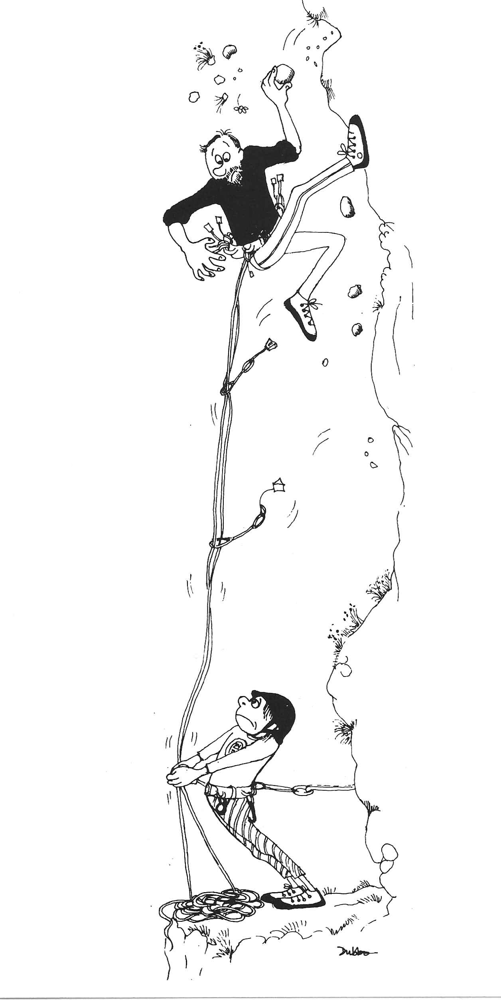
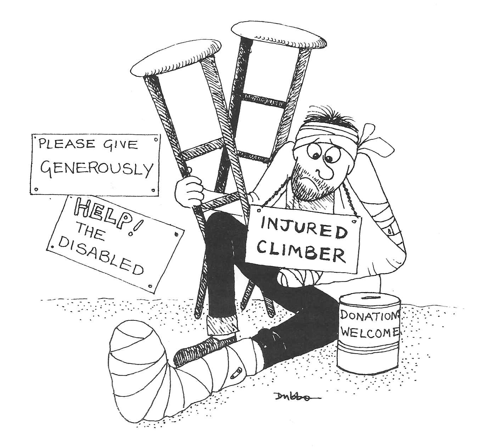

Falling Off
Climbing is all about getting up. The trick is to ascend vertically to the top with appropriate downward glances to check the placement of the feet on foot holds, but without downward movement of the rapid uncontrolled variety. Deviation from ascent is permissible by traversing sideways, climbing down or abseiling, but certainly not by taking to the air and relying on gravity.
The reasons for this are, of course, obvious. Firstly, climbers are land creatures who do not possess wings, so any attempts at aerobatics will inevitably result in a bumpy landing. Secondly, the whole ethos of the sport of climbing is to get up. To fall off is to repudiate this basic principle.
Nevertheless, the art of falling off is sometimes practised by those who find themselves too stretched to continue upwards. As with all good mountaineering clubs, The Castle is rife with stories of those who have fallen off, ranging from the ones who have got away with amazing scrapes and near misses to those who have suffered more serious injuries. At various times battered helmets and frayed ropes have been displayed in the clubroom, whilst the fallen have themselves limped in on crutches, their damaged limbs suitably encased in plaster.
The better practitioners of the art of falling off manage to ensure, by the prior placement of adequate runners and a good choice of second, the avoidance of contact either with rocks on the face or the ground at the bottom, so that the fall is no more than a mere dangle from the last runner. The less able practitioners of the art fail to keep one or more of these points in mind and so fail to achieve such an innocuous end result.
Some go quietly, others with much noise and commotion. Witness the Club member who destroyed the Lakeland solitude on Dow Crag by noisily dislocating his shoulder, the din of his painful fall being equalled only by his protests at the rough and ready on the spot reduction of the injury by a fellow Club member. Some are not even content with a single incident but insist on trying again: one notorious case insisted on returning to the crags with his newly acquired pot only to chalk up another fall to his portfolio and more Plaster of Paris to his person.
At this stage I have to declare my personal interest in the matter and admit to belonging to the ranks of the fallen. My fall was accomplished without noise or loud proclamation and I did at least achieve dangle only in my case the dangle was merely momentary due to the runner not proving sufficient.
It all began innocently enough one sunny May afternoon. First my left hand slipped off the rock followed by my right hand and then by both feet. The books tell us that three points of contact is the rule. And with no point of contact at all further upwards progress becomes impossible. The result was the forbidden condition of downward flight. As I saw terra firma approaching at alarming speed with a painful impact seeming inevitable, my reaction changed from mild surprise at my sudden airborne status to abject terror. Contrary to folklore, my previous life did not flash before me and events did not happen in slow motion. On the contrary, I made contact with the ground at speed and the result was both quick and painful. My landing was possibly the most unskilful aspect of of all, following very much the traditional warning of the result of a bad landing given to raw recruits in the Paras: "Toes, knees, hospital!"
Well, there it is, my personal summary of the whys and wherefores of falling off and how it has worked for me. It is an activity which continues from year to year and is one which is inseparable from climbing itself. Without the risk of falling off there would be no being gripped, no adrenalin and no beer embellished accounts of scrapes and near misses. Most of the fallen do resume their climbing careers some as I have already mentioned even repeat the experience. Personally though, I have succumbed completely to the downward urge and now practice the art of caving.

Figure 1: Falling Off

Figure 2: Falling Off